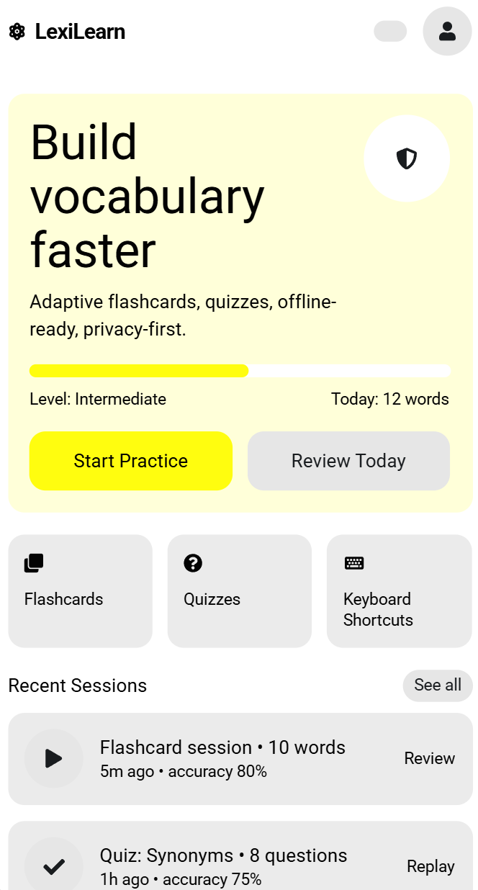
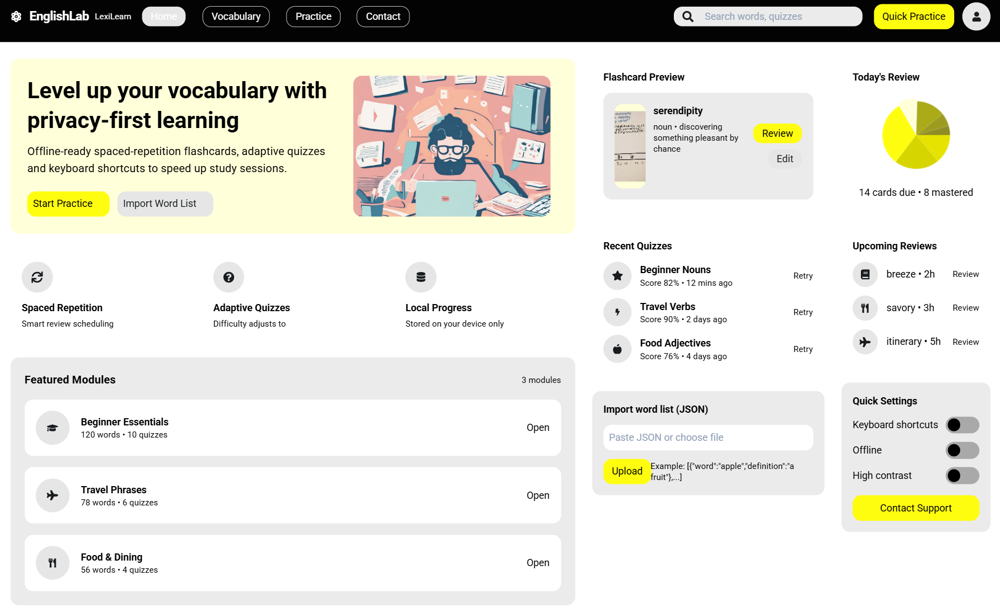

Site Name
Name: EnglishLab - LexiLearn
Reason: The name represents taking a "leap" forward in language proficiency. It is memorable, positive, and sounds accessible to pre-intermediate learners seeking a welcoming environment for conversational practice.
Site Purpose
The site serves as a practical, interactive educational tool. It provides conversational English learners with a hub to study dynamic vocabulary lists, track their learning progress via interactive flashcards/quizzes, and easily submit questions directly to instructors for further guidance.
Scenarios
- "How can I practice and test my knowledge of vocabulary word collocations for my upcoming conversational English lesson?"
- "Where can I find an easy-to-use contact form to ask an instructor a specific question about grammar phrasing?"
Color Schema
The following colors are chosen to create a calm, focused, yet encouraging educational environment. Note: These colors are actively applied to this site plan document.
| Color | Hex Code | Usage |
|---|---|---|
| Primary Navy | #1D3557 | Header background, main headings (h3), footer background. |
| Accent Blue | #457B9D | Borders, table headers, and emphasized text. |
| Off-White | #F1FAEE | Main body background to reduce eye strain. |
| Charcoal | #1A1A1A | Main body text for high contrast and readability. |
Typography
Note: These fonts are actively applied to this site plan document.
- Headings: 'Montserrat', sans-serif. Used for the site title, header, and all section headings (h1, h2, h3) to provide a clean, modern structure.
- Body Text: 'Open Sans', sans-serif. Used for paragraphs, lists, and table data. Selected for its excellent readability for ESL learners.
Wireframes
Below are the structural wireframes for the Home Page in both Mobile and Desktop views.
Mobile View

Desktop View
